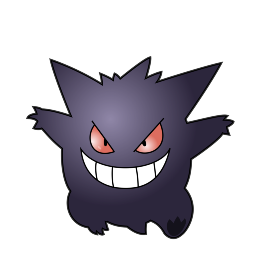

-
Pikachu
HP 300

Descrição
Pikachu é um Pokémon roedor meio gordinho, com o pêlo amarelo em todo o seu corpo. As orelhas de Pikachu são longas e chegam a um ponto com pontas pretas. Ele tem uma boca pequena, que se assemelha a um lado tres, tem olhos negros com os alunos brancos e dois círculos vermelhos em suas bochechas.
-
Charizard
HP 800

Descrição
Ao contrário de suas pré-evoluções, tem asas que lhe permite voar, é um pokemon muito parecido com um dragão. Como suas formas anteriores, é bípede e tem uma longa cauda com uma chama que só se apaga quando ele morre.
-
Mewtwo
HP 1200

Descrição
Mewtwo é uma criatura com uma postura humanóide, mas tem algumas características felinas. O corpo de Mewtwo é cinzento-roxo e uma cauda longa totalmente da cor roxa. Mewtwo tem três dígitos circulares em cada apêndice. Tem uma ponta no interior de cada um dos pés, como muitos primatas do mundo real, bem como duas outras que ficam na frente. Ele tem os olhos roxos e duas orelhas curtas.
-
Lucario
HP 880
Descrição
Ele consegue sentir a aura de todas as coisas e também compreende a fala humana. Capturando a aura que emana dos outros, pode ler seus movimentos e pensamentos.
-
Darkrai
HP 942

Descrição
Dizem que este Pokémon vaga durantes as noites de lua cheia e adormece as pessoas, fazendo com que elas tenham pesadelos. Darkrai é mostrado como misterioso e sinistro mas extremamente incompreendido. Também se mostra uma criatura de hábitos, pois causa pesadelos, independentemente de quem afeta. No entanto, há muito pouca evidência para provar que isso assusta maliciosamente os humanos de propósito.
-
Gengar
HP 500
Descrição
Gengar são tipicamente mesquinhos e gostam de atormentar as pessoas, machucando-as e ultrapassando-as. Eles são mais ativos durante as luas cheias, rastejando na calada da noite e se disfarçando de sombras; eles podem até entrar em casas adormecidas para se esconder no escuro.
-
Arceus
HP 10000
Descrição
Acredita-se que Arceus tenha criado a região de Sinnoh e possivelmente todo o mundo Pokémon, os guardiões do lago Uxie, Azelf e Mesprit; e o trio de criação Dialga, Palkia e Giratina. Por causa disso, Arceus é considerado um dos mais longevos de todas as espécies de Pokémon. Além de poder recriar o trio de criação, presumivelmente para guardar e proteger as dimensões quando um treinador captura um deles.
-
Lugia
HP 2070
Descrição
Conhecido como o Guardião dos Mares, Lugia é tremendamente inteligente e muito gentil com a vida ao seu redor, apesar de seu tamanho colossal. Devido ao fato de poder explodir casas com o simples bater de suas asas, ele se isola profundamente dentro da grande corrente, para evitar que prejudique a civilização.